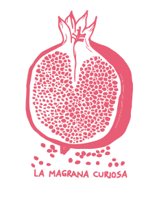

Som la Magrana Curiosa, una cooperativa feminista dedicada a promoure el joc i l'art per a la transformació social.
La Magrana curiosa vol oferir un detonant o provocació de joc lliure per a nenes i nens que estan a casa seva aquests dies!
Desgrana la magrana simbolitza totes aquelles peces soltes de materials quotidians que tenim per casa i que mirats d'altra manera ens poden aportar molt de joc.